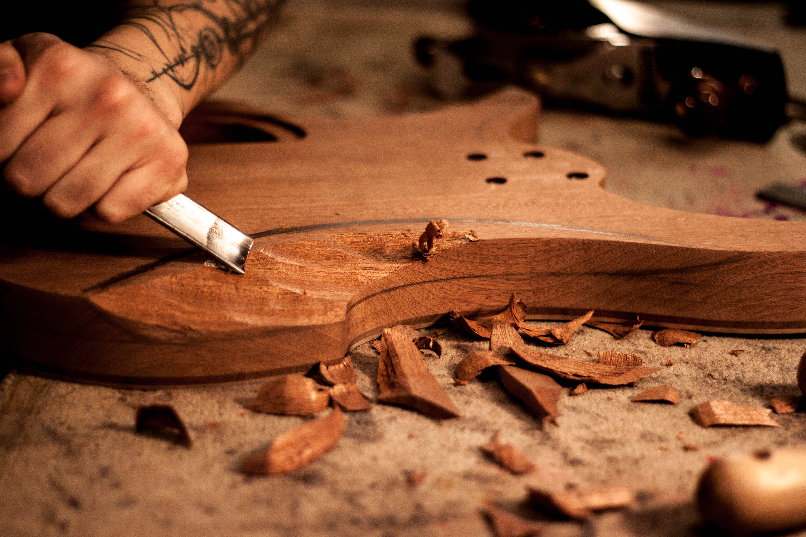
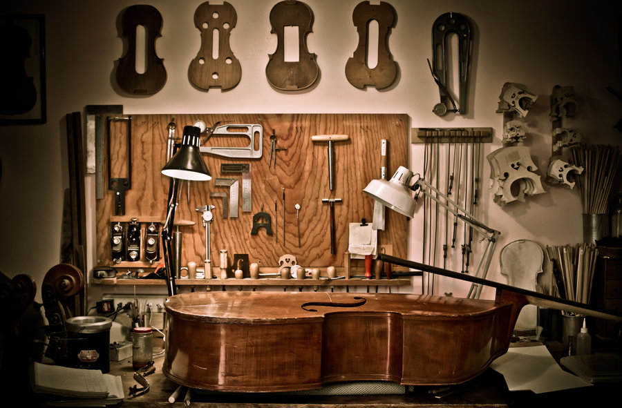
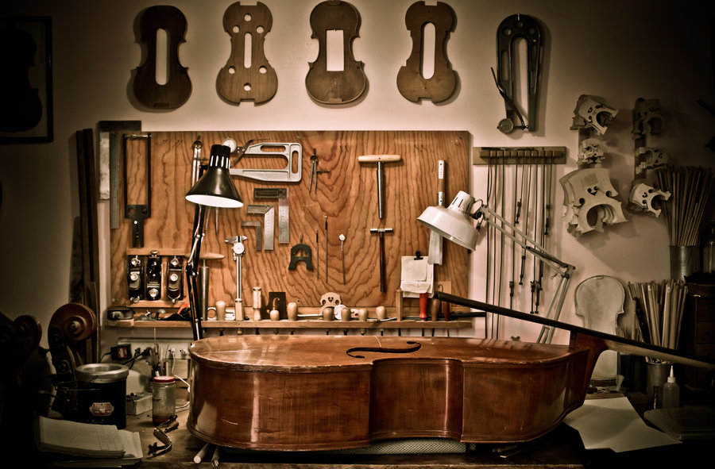

My career
Ever since I started playing guitar, I've wanted to build guitars too. Being a "luthier", which is the official name of a professional guitar crafter/repairman. to me, being a luthier is a way to be in the music field, use my hands to build something, and not work in an office for my whole life. I plan on Starting my own buisness and Owning my own workshop. One benefit of being in a job like this, I can make my own hours, allowing me to be more of family man. I'm already starting to build guitars as a hobby, and soon enough I will be selling them as my own product and growing my buisness for the future.
 
